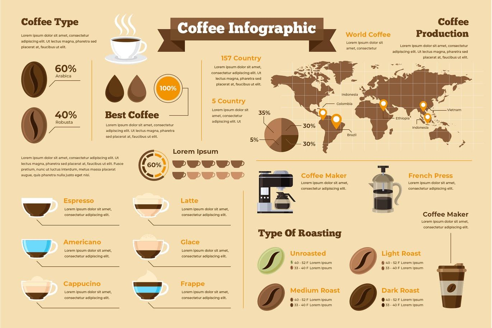

Cafés del Mundo
| Variedad | Sabor | Lugar | Características |
|---|---|---|---|
| Arábica | Es más ácido y su sabor es suave y agradable. | Colombia, Honduras, Nicaragua, Perú, Brasil, Africa Central | El café de esta variedad es conocido por tener un sabor suave pero aromático, con notas dulces y florales. |
| Robusta | Tiene un sabor más fuerte y amargo. | África Occidental y Malasia | El café de esta variedad es conocido por tener un sabor más amargo, es más intenso, fuerte, menos aromático y con mucho cuerpo. |
| Libérica | Tiene un sabor muy fuerte y toques amaderados, incluso notas a chocolate. | África Occidental y Malasia | Su sabor no es muy apetecido por sus notas ahumadas, sabor amargo y por tener mucho cuerpo y fuerza. |
| Excelsa | Notas ahumadas y un cuerpo ácido y afrutado. | Indonesia y Filipinas. | Tiene un sabor muy fuerte, amargo y es de mucho cuerpo, por eso no es muy demandado. |

Es más ácido y su sabor es suave y agradable. Se produce principalmente en las zonas de Colombia, Honduras, Nicaragua, Perú, Brasil y Africa Central.
El café de esta variedad es conocido por tener un sabor suave pero aromático, con notas dulces y florales.
Tiene un sabor más fuerte y amargo. Se produce principalmente en las zonas de África Occidental y Malasia.
El café de esta variedad es conocido por tener un sabor más amargo, es más intenso, fuerte, menos aromático y con mucho cuerpo.
Tiene un sabor muy fuerte y toques amaderados, incluso notas a chocolate. Se produce principalmente en las zonas de África Occidental y Malasia,
Su sabor no es muy apetecido por sus notas ahumadas, sabor amargo y por tener mucho cuerpo y fuerza.
Esta variedad tienen notas ahumadas y un cuerpo ácido y afrutado. Se produce principalmente en las zonas de Indonesia y Filipinas.
Tiene un sabor muy fuerte, amargo y es de mucho cuerpo, por eso no es muy demandado.